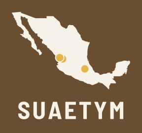

SUAEtym
Southern Uto-Aztecan etymological dictionaryExample page. The etyma and their reflexes come from the working reconstructions in the Nahuatl dialect database (Lastra 1986 and later additions). They are drafts and for now cover only the Nahua varieties; cognates in the other languages will be added.
The data could not be loaded.
Languages
- Southern Uto-Aztecan
- Corachol
- Wixárika
- Naayeri
- Nahuan (Aztecan)
- Pochuteco
- Nahua varieties
- ‹Other branches to be defined›
- Corachol
PSUA = Proto-Southern-Uto-Aztecan; PCN = Proto-Corachol-Nahua; PPN = Pre-Proto-Nahua; PN = Proto-Nahua.
Source of the reflexes: Lastra de Suárez, Yolanda. 1986. Las áreas dialectales del náhuatl moderno. Mexico: UNAM, plus points added by the project. Reconstructions: SUAHIST project (ERC 101116662), working drafts.